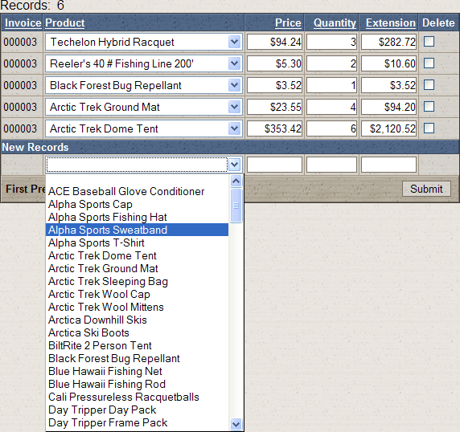

Displaying Field1 While Storing Field2
The following grid component displays a valuable capability of choice lists used by drop down lists and radio buttons.
The sample grid below is based on the AlphaSports Invoice_Items table, which uses the Product_ID field to link to the Product table. The second column of the grid displays the Description field from the Product table, while it stores the Product_ID field from the Product table.
To implement this feature:
Create an updateable grid based on the AlphaSports Invoice_Items table.
Display the Grid > Fields menu of the Grid Component Builder.
Select the "Product_ID" field in the Available Fields list.
Change the Display Settings > Control type to "Dropdownbox".
Click the
 in the DropDownBox Properties > Choices field to display the Define Choices dialog.
in the DropDownBox Properties > Choices field to display the Define Choices dialog.Select "Dynamic" in the Define Choices > List Type field.
Select "product" in the Data Source > Table name field.
Select "Description" in the Data Source > Display value field/ex
pression field.Select "Product_ID" in the Data Source > Stored value field/ex
pression field.

See Also